Angles That Reach
In which a robot arm cannot touch a mark two hand-spans away, and nineteen centuries of astronomy turn out to be the reason it finally can.
Try it yourself. Guess the angles.
This arm has two motors and you have two sliders. The gold mark is the target. Nothing here is difficult — there are only two numbers to choose. Touch the mark.
Frustrating, isn't it? Both sliders change both directions of the hand at once. You are hunting a two-dimensional answer with two coupled knobs — and a real welding robot doing this by trial and error would gouge the car door. What you just felt is the exact problem statement: given where I want the hand, what are the angles? Hold that feeling. It took humanity about 1,900 years.
Nineteen centuries to name a ratio
Nobody invented trigonometry to pass a test. It was invented, four times over, by people who needed to reach something they could not touch — a star, a shoreline, an inheritance share. The robot arm is only the newest thing that is far away.
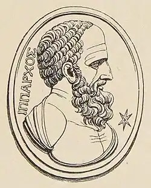
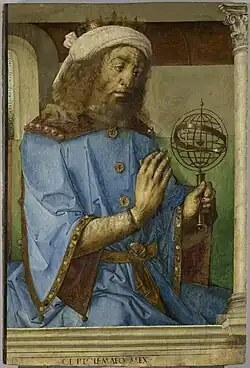
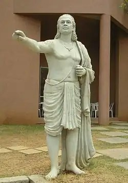
sin.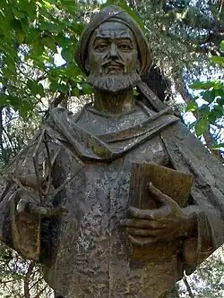
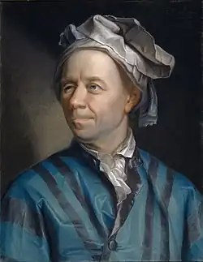
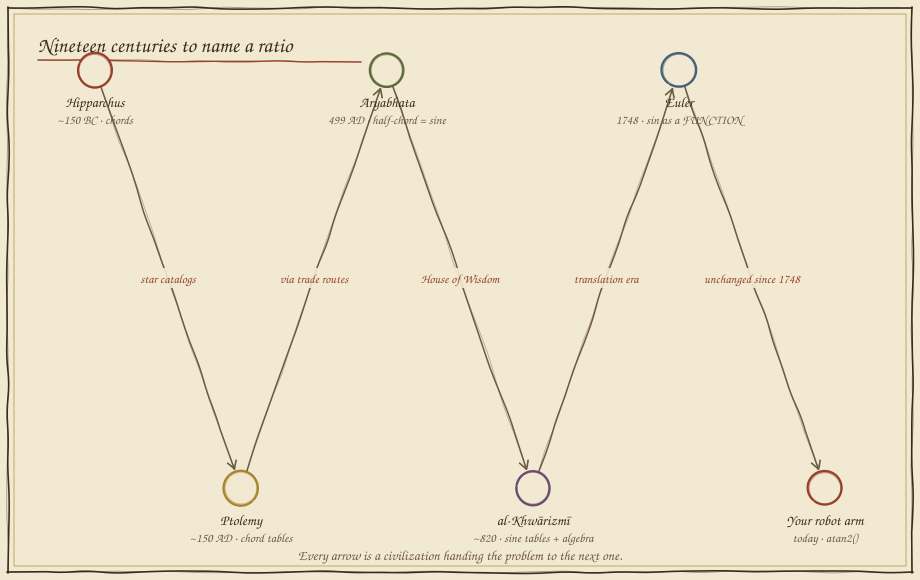
A circle, seen sideways
Here is Aryabhata's move. Take one link of the robot arm and pin it at the center of a circle — the link is the radius. Then ask the only question that matters: at angle θ, how far over and how far up is the tip? Those two shadows have names.
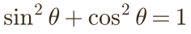
Now the arm. The hand's position is just two radii chained together — link one casts its shadows, link two (tilted by the elbow) adds its own. Read this aloud as geography, not symbols: x is everyone's "how far over," added up. y is everyone's "how far up."
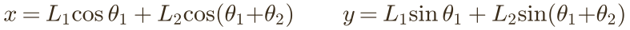
But Act I asked the hard direction: position in, angles out. Enter a 2,300-year-old tool. The base, the elbow, and the target form a triangle whose three sides we already know — the two link lengths, and the straight-line distance to the target. The law of cosines is a bolt cutter for exactly this lock: three sides in, any angle out.
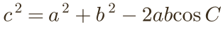
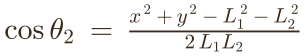
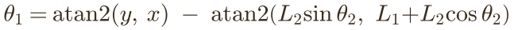
atan2 is the programmer's whole-circle arctangent —
Ptolemy's table, compiled to silicon.
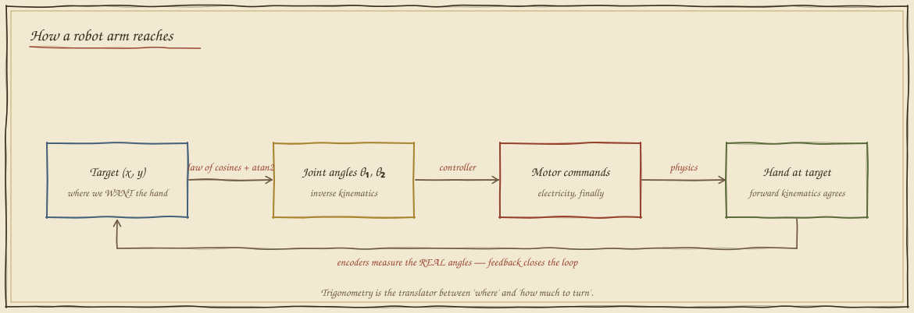
Now let the mathematics drive
Same arm, same two motors. But now you point, and the triangle solves itself — drag the target anywhere. Turn on the construction lines to watch the law of cosines work; flip the elbow to see both of the triangle's two honest answers.
Watch the FK re-check readout: after solving for the angles, the
simulator pushes them back through the forward-kinematics formula and
compares with your target. That is what correctness means here —
not a red pen, but the machine agreeing with itself. When you drag beyond
the arm's reach, the readout shows cos θ₂ escaping [−1, 1]: the
formula refusing gracefully, which is exactly what a well-built robot does.
What you can now build
Pick-and-place arms, surgical manipulators, 3-D printer gantries, the excavator bucket that stops exactly at the pipe — every one of them runs the two formulas you just watched solve a triangle. And the same unit circle is about to become the language of rotation itself: in Exhibit 13, multiplying by a complex number will spin this arm, and by Exhibit 21, Hamilton's quaternions will fly a drone with it.
Field exercise: measure your own forearm and upper arm. Compute cos θ₂ for touching a point 10 cm beyond your fingertip's reach. The number that comes back is the mathematics telling you what you already know in your shoulder — some targets need you to step closer. Formulas are not answers; they are honest reports about the world.
return to the curriculum map